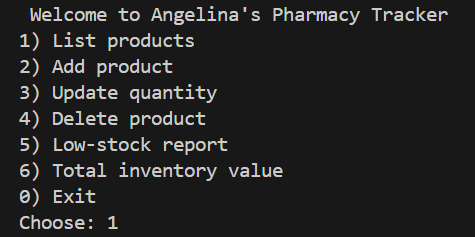
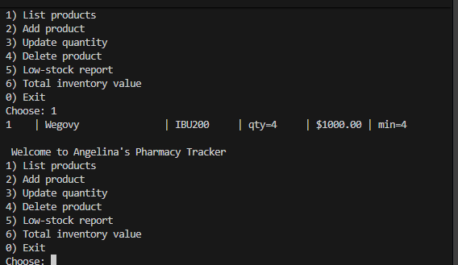
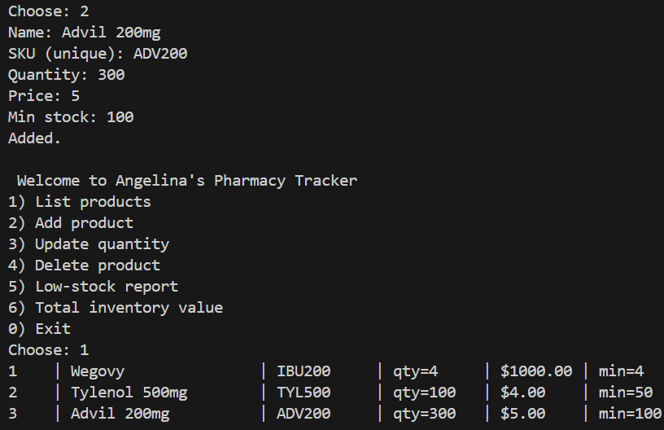
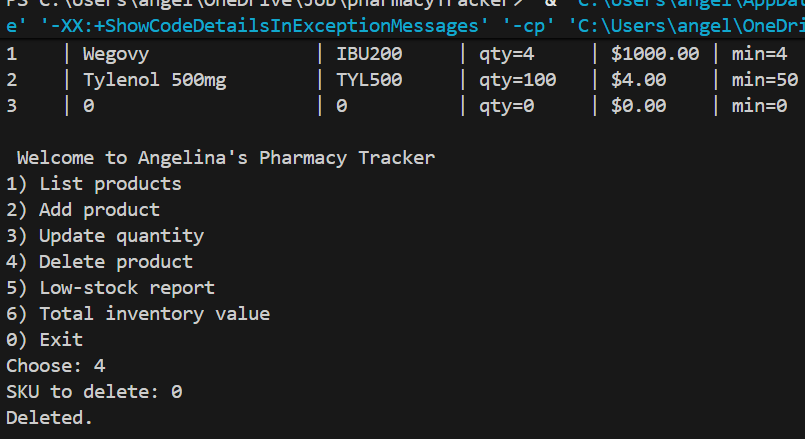

Pharmacy Tracker
Java • CSV File Storage • Object-Oriented Programming
Problem
Pharmacy inventory must be tracked carefully to avoid shortages, duplicate records, and inaccurate product counts. This project was created to simulate a simple inventory management system that helps organize medication records and support daily inventory tracking tasks.
Approach
I built this project as a Java command-line application using object-oriented programming principles. The program uses separate classes for the application flow, inventory service logic, product data, and file storage. Product information is saved in a CSV file so data can persist between sessions.
Solution
The application provides a menu-driven interface that allows users to:
- List products currently stored in inventory
- Add new products with a unique SKU
- Update inventory quantities
- Delete products from inventory
- Generate low-stock reports
- Calculate total inventory value
Outcome
This project strengthened my understanding of Java, file handling, menu-driven applications, and data validation. It also helped me think through how a real-world pharmacy-inspired process can be translated into software logic. During testing, I also identified input-formatting issues, which reinforced the importance of validating user input.
Project Screenshots



